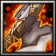

- 主要屬性 力量
攻擊範圍 128
- 基礎護甲 5
基礎攻速 1.7
- 基礎攻擊 117 - 135
基礎跑速 310
德川家臣四天王之一，戰國中後期之名將，世稱「赤夜叉」、「赤鬼井伊」為家康的貼身侍衛，直政的初戰當時直政年僅十六歲，在芝原合戰中，直政迅即立功，得到家康的讚賞。
-
D釋放怒焰
-
--
-
--
對指定方向噴出扇狀火焰，使敵人受到(235/315/395/475)傷害。
本技能於習得「炎驅戰魂」後可於戰鬥中觸發
-
W赤鬼之力
-
80/95/110/125
-
12
解放自我來暫時獲得強大的赤鬼之力，增加200%攻擊速度和(5/10/15/25)%移動速度。持續(6/8/10/12)秒。
-

-
E赤流星
-
80/105/125/145
-
18/15/12/9
對距離(500/650/800/950)的目標敵人打出一道赤流星，可以將之暈擊1.85秒，並造成(100/190/280/370)傷害。
冷卻時間隨技能等級提升降低
-
--炎驅戰魂
-
--
-
--
增加自身及周圍友軍(5/9/13/17)%移動速度 ，並且每攻擊5次便可以獲得1次「釋放怒焰」的能力，對指定方向噴出扇狀火焰，使敵人受到(235/315/395/475)傷害。
習得此技能可一併學會「釋放怒焰」
-
T赤炎之怒
-
135/135/135
-
75/65/55
獲得赤炎之怒的能力，在接下來40秒增加(100/150/250)攻擊傷害 ，並且在持續時間內前7次攻擊可以獲得擴散效果，在擊中目標時連帶的對四周的其他敵人造成等同攻擊傷害100%的傷害。
學習等級為6/12/18，冷卻時間隨技能等級提升降低附加傷害屬無視魔法免疫、法術抗性與防禦的粉碎擊
-

-
B屬性加乘
-
--
-
--
永久性的提升(3/6/9/12)靈活、智慧和力量。